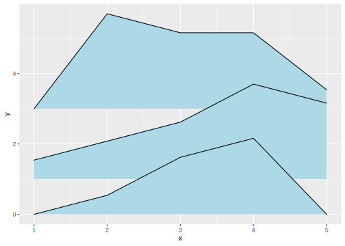
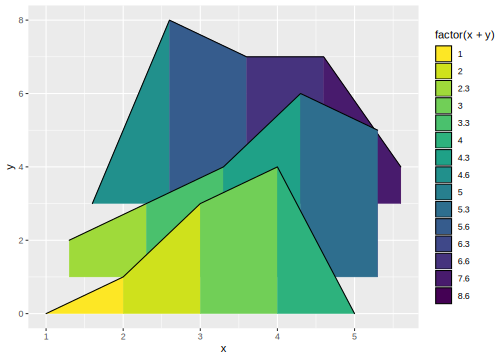
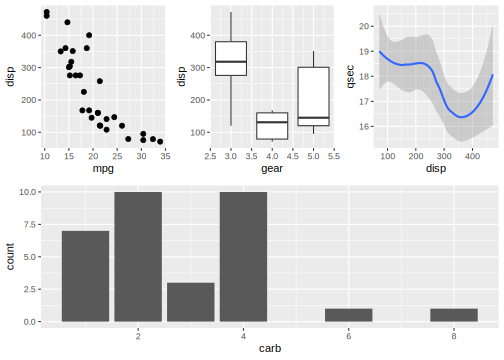
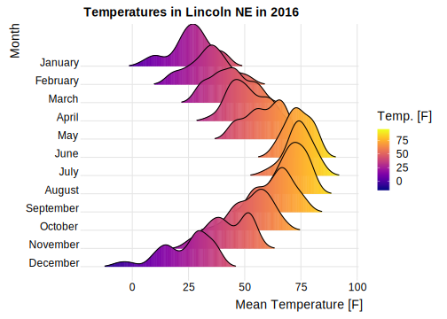
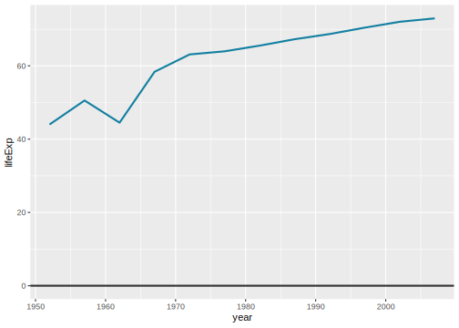
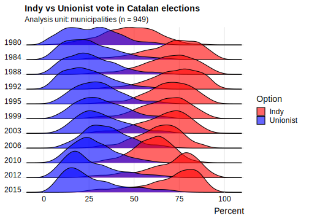

5 ggpubr
ggpubr 是一个基于 ggplot2 图形风格的图表包，它并不提供额外的集合对象、统计变换和标度等，而是以 gg* 函数族直接创建图形对象，并将属性映射、标度调整、统计变换、排版、主题设置等功能全部设置在这个函数中, 不过也可以和 ggplot2 函数创建的图层叠加。个人认为这个包其实不太符合 ggplot2 的设计思想，这里只简单介绍几个比较喜欢的函数和可视化方案。
参考： https://rpkgs.datanovia.com/ggpubr/index.html
5.1 ggbarplot
ggpubr 提供的条形图函数 ggbarplot() 没有默认的统计变换 (类似 geom_col() )，有一个很方便的排序参数 sort.val，这样我们就不必对要呈现的变量事先排序。此外 ggpubr 包还带有一些不错的期刊配色方案(在 palette 中设置)
## name mpg cyl disp hp drat wt qsec vs am gear carb
## 1 Mazda RX4 21.0 6 160 110 3.90 2.620 16.46 0 1 4 4
## 2 Mazda RX4 Wag 21.0 6 160 110 3.90 2.875 17.02 0 1 4 4
## 3 Datsun 710 22.8 4 108 93 3.85 2.320 18.61 1 1 4 1
## 4 Hornet 4 Drive 21.4 6 258 110 3.08 3.215 19.44 1 0 3 1
## 5 Hornet Sportabout 18.7 8 360 175 3.15 3.440 17.02 0 0 3 2
## 6 Valiant 18.1 6 225 105 2.76 3.460 20.22 1 0 3 1## 降序 sort.val = "desc"
ggbarplot(dfm, x = "name", y = "mpg",
fill = "cyl", # change fill color by cyl
color = "white", # Set bar border colors to white
palette = "jco", # jco journal color palett. see ?ggpar
sort.val = "desc", # Sort the value in ascending order
x.text.angle = 90 # Rotate vertically x axis texts
)
## 升序 sort.val = "asc"
ggbarplot(dfm, x = "name", y = "mpg",
fill = "cyl", # change fill color by cyl
color = "white", # Set bar border colors to white
palette = "jco", # jco journal color palett. see ?ggpar
sort.val = "asc", # Sort the value in ascending order
x.text.angle = 90 # Rotate vertically x axis texts
)sort.by.groups = TRUE 可以使排序在组内进行，rotate 可以水平 / 竖直颠倒条形图
ggbarplot(dfm, x = "name", y = "mpg",
fill = "cyl", # change fill color by cyl
color = "white", # Set bar border colors to white
palette = "jco", # jco journal color palett. see ?ggpar
sort.val = "desc", # Sort the value in ascending order
sort.by.groups = TRUE, # Sort inside each group
rotate = TRUE # Don't sort inside each group
)
上图中的 y 轴标签过大，ggpubr 中的 font() 函数用于调整主标题、副标题、坐标轴标题和标签，调用方式类似于 ggplot2 中的主题函数，直接添加到图形对象上：
ggbarplot(dfm, x = "name", y = "mpg",
fill = "cyl", # change fill color by cyl
color = "white", # Set bar border colors to white
palette = "jco", # jco journal color palett. see ?ggpar
sort.val = "desc", # Sort the value in ascending order
sort.by.groups = TRUE, # Sort inside each group
rotate = TRUE, # Don't sort inside each group
xlab = FALSE,
ylab = FALSE
) +
font("y.text", size = 8, face = "italic") +
font("legend.title", color = "red", face = "bold")
更多的设置可见： https://rpkgs.datanovia.com/ggpubr/reference/font.html
5.2 ggdotchart
ggdotchart 是 ggpubr 中用于创建散点图的函数：

在此基础上，ggdotchart() 可以轻松绘制出 Cleveland 点图（lollipop chart）, 关键是设置参数 add = "segment"：

- 将
cyl映射到点的颜色上
- 用
add.params改变线段的样式
- 使用 ggpubr 的主题
theme_pubr()
ggdotchart(dfm, x = "name", y = "mpg",
color = "cyl", # Color by groups
palette = c("#00AFBB", "#E7B800", "#FC4E07"), # Custom color palette
add = "segments", # Add segments from y = 0 to dots
add.params = list(color = "lightgray", size = 2),
ggtheme = theme_pubr() # ggplot2 theme
)
下面：
ggdotchart默认的排序是升序，更改为sorting = “descending”
- 翻转坐标轴:
rotate = TRUE
- 使得
mpg的值在组内排序，而不是总体排序：group = “cyl” - 增大点的大小，为了下一步增加标签
dot.size = 6
- 增加数据标签
label = “mpg”或者label = round(dfm$mpg)
- 用
font.label设置数据标签的格式
ggdotchart(dfm, x = "name", y = "mpg",
color = "cyl", # Color by groups
palette = c("#00AFBB", "#E7B800", "#FC4E07"), # Custom color palette
sorting = "descending", # Sort value in descending order
add = "segments", # Add segments from y = 0 to dots
add.params = list(color = "lightgray", size = 2),
rotate = TRUE, # Rotate vertically
group = "cyl", # Order by groups
dot.size = 6, # Large dot size
label = round(dfm$mpg), # Add mpg values as dot labels
font.label = list(color = "white", size = 9,
vjust = 0.5), # Adjust label parameters
ggtheme = theme_pubr() # ggplot2 theme
)
ggdotchart 还有一大特色： 坐标轴标签的颜色也成为可以映射的变量。在下面的图中设置： y.text.col = TRUE 将当前分组变量映射到 y 轴标签颜色上 ; theme_cleveland() 添加虚线：
ggdotchart(dfm, x = "name", y = "mpg",
color = "cyl", # Color by groups
palette = c("#00AFBB", "#E7B800", "#FC4E07"), # Custom color palette
sorting = "descending", # Sort value in descending order
rotate = TRUE, # Rotate vertically
dot.size = 2, # Large dot size
y.text.col = TRUE, # Color y text by groups
ggtheme = theme_pubr() # ggplot2 theme
) +
theme_cleveland() + # Add dashed grids +
font("y.text", size = 8, face = "italic")
5.3 ggscatterhist
ggpubr 中的 ggscatterhist() 函数将散点图与直方图 / 密度图结合在一起：
## 创造数据
set.seed(20191011)
x1 <- rnorm(200, 1.5, 0.5)
y1 <- rnorm(200, 2, 0.2)
x2 <- rnorm(200, 2.5, 0.5)
y2 <- rnorm(200, 2.5, 0.5)
x3 <- rnorm(200, 1, 0.3)
y3 <- rnorm(200, 1.5, 0.2)
data <- tibble(x = c(x1, x2, x3),
y = c(y1, y2, y3),
class = rep(c("A", "B", "C"), each = 200))
## 绘图
ggscatterhist(
data = data,
x = "x",
y = "y",
shape = 21,
color = "black",
fill = "class",
palette = c("#00AFBB", "#E7B800", "#FC4E07")
)
margin.plot = "density"(默认) 绘制核密度估计图，选择 “histogram” 绘制直方图：
ggscatterhist(
data = data,
x = "x",
y = "y",
shape = 21,
color = "black",
fill = "class",
palette = c("#00AFBB", "#E7B800", "#FC4E07"),
margin.plot = "histogram"
)
margin.params 用一个列表设置边缘图形的参数；ggtheme 设置主题：
ggscatterhist(
data = data,
x = "x",
y = "y",
shape = 21,
color = "black",
fill = "class",
palette = c("#00AFBB", "#E7B800", "#FC4E07"),
margin.plot = "density",
margin.params = list(alpha = 0.5, fill = "class", color = "black"),
ggtheme = theme_minimal()，
) 
xlab 和 ylab 设置坐标轴标签，title 设置图表标题：
ggscatterhist(
data = data,
x = "x",
y = "y",
shape = 21,
color = "black",
fill = "class",
palette = c("#00AFBB", "#E7B800", "#FC4E07"),
margin.plot = "density",
margin.params = list(alpha = 0.5, fill = "class", color = "black"),
ggtheme = theme_minimal()，
xlab = FALSE, ## 取消标签
ylab = FALSE,
title = "A scatterhist plot"
) 
5.4 ggarrange
参考： https://www.rdocumentation.org/packages/ggpubr/versions/0.2.3/topics/ggarrange
ggarrange() 是用来排版多个 ggplot 图像对象的函数(不止是 ggplot2 的图形才是 ggplot 对象)。最重要的几个参数为：
...: 任意数目的 ggplot 对象，传入NULL则对应位置为空白
nrow和ncol控制多个 ggplot 对象呈现的行数和列数
widths和heights控制一行 / 列内图像所占区域的相对大小，如width = c(2, 1)将绘图区横向切分为两个部分，宽度比为 2 ： 1
data("ToothGrowth")
df <- ToothGrowth
df$dose <- as.factor(df$dose)
# Box plot
bxp <- ggboxplot(df, x = "dose", y = "len",
color = "dose", palette = "jco")
# Dot plot
dp <- ggdotplot(df, x = "dose", y = "len",
color = "dose", palette = "jco")
# Density plot
dens <- ggdensity(df, x = "len", fill = "dose", palette = "jco")
# Arrange
ggarrange(bxp, dp, NULL, dens,
ncol = 2, nrow = 2)## `stat_bindot()` using `bins = 30`. Pick better value with `binwidth`.
common.legend = TRUE 可以为多个 ggplot 对象 创建统一图例：
## `stat_bindot()` using `bins = 30`. Pick better value with `binwidth`.